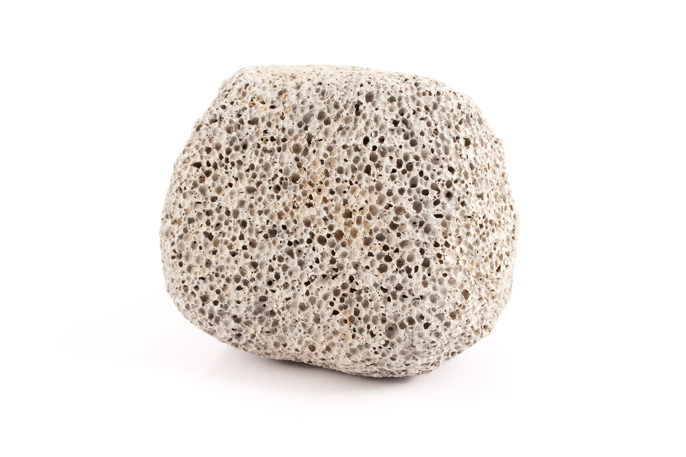
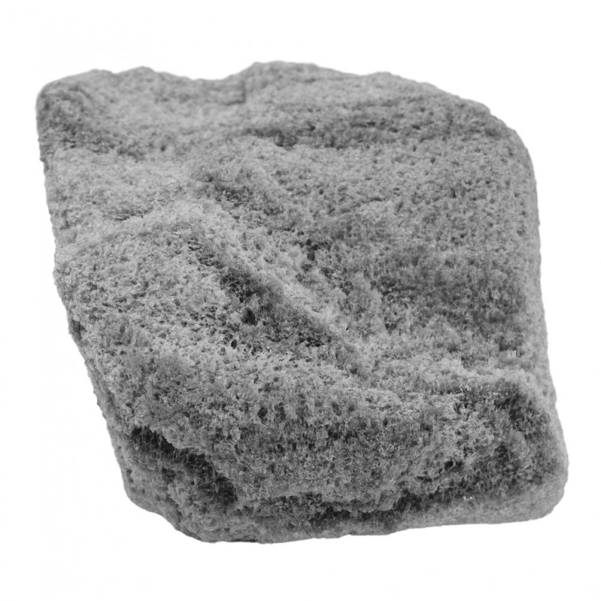
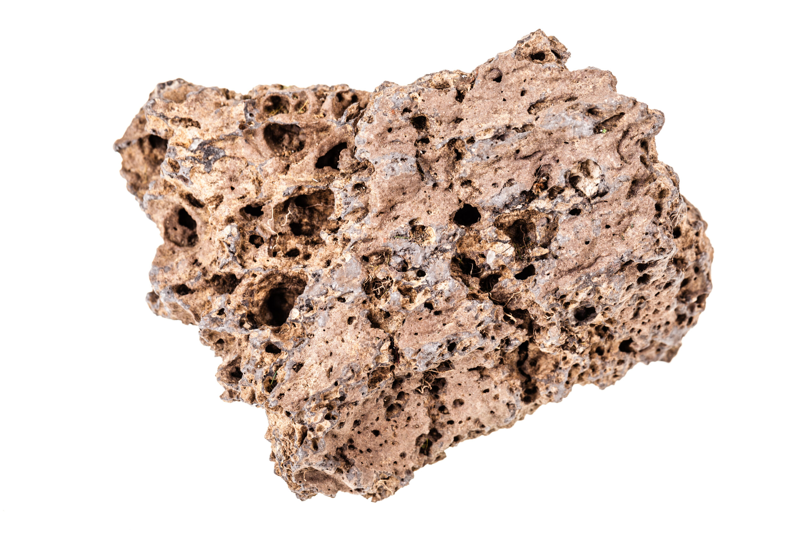
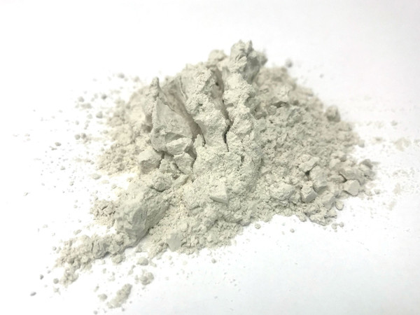
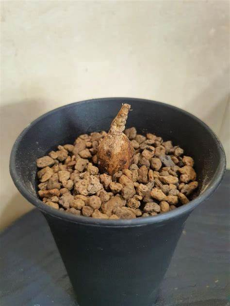
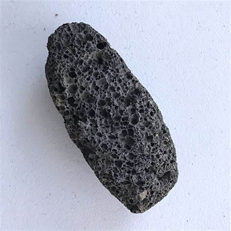
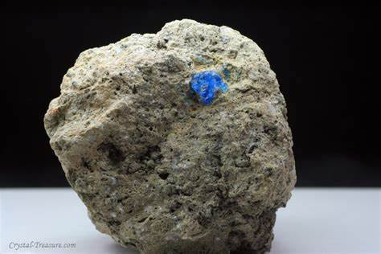

Pumice: The Lightweight Rock of Fire and Air
Chemical Formula: Primarily composed of silicon dioxide (SiO₂), aluminum oxide (Al₂O₃), and other trace elements
Color: Light colors including white, grey, light yellow, or pale pink
Hardness: 6 on the Mohs scale
Crystal System: Amorphous (volcanic glass)
Localities: Found in volcanic regions such as Italy, Greece, the Canary Islands, and the United States (Hawaii, California, Oregon)
Common Uses: Abrasive materials, concrete production, personal care (pumice stones), and horticulture
Pumice is an incredibly lightweight volcanic rock formed through the rapid cooling and depressurization of magma during explosive volcanic eruptions. Its porous, frothy structure is due to the gas bubbles trapped inside the lava as it cools, creating a highly vesicular texture. Because of its lightweight and buoyant nature, pumice can often be found floating on water after eruptions.
Pumice has been valued since antiquity for a variety of uses, including in construction, abrasives, and personal care. Its abundance in volcanic regions and unique properties make it an important resource for industrial, cosmetic, and horticultural applications.
Formation and Types of Pumice
Pumice forms when high-silica volcanic lava cools quickly while simultaneously releasing dissolved gases. The rapid cooling creates the rock's unique frothy texture, which is highly porous and lightweight. Pumice is commonly found in volcanic regions and is often produced during highly explosive eruptions of silica-rich lava.
Key Types of Pumice:
White Pumice
White pumice is among the lightest and most commonly found varieties. It forms from highly siliceous lava and is often used in the production of lightweight concrete.
Grey Pumice
A slightly denser variety, grey pumice is still lightweight but may contain more minerals such as iron, giving it a darker color.
Pink or Reddish Pumice
This variety forms when iron-rich volcanic material cools, giving the pumice a pink or reddish hue. It is often used in landscaping and decorative applications.
Fine-Grain Pumice
Sometimes referred to as "pumicite," this fine-grained form of pumice is used in polishing compounds and for its abrasive properties in cleaning products.
Structure and Properties of Pumice
Pumice is distinguished by its highly porous structure created as gas bubbles are trapped in the molten rock during volcanic eruptions. This unique texture gives pumice its lightweight, airy feel and makes it one of the few rocks that can float on water.
- Hardness: Pumice has a hardness of around 6 on the Mohs scale, but its brittle nature and porous texture make it much less durable than other volcanic rocks.
- Color: Pumice typically has a light color, including shades of white, grey, pale yellow, or pink, depending on the mineral content.
- Density and Buoyancy: Pumice is so lightweight that it can float on water for long periods. The density of pumice is about 0.25–1.0 g/cm³.
- Porosity: Pumice is highly porous, with up to 90% of its volume consisting of empty spaces, making it an excellent material for water retention in horticulture.
Uses of Pumice
Pumice has a wide range of applications across industries due to its abrasive, lightweight, and porous properties.
1. Abrasive Materials
Pumice is widely used as an abrasive in products like polishes, cleaners, and exfoliating soaps. Its gritty texture makes it effective for removing dead skin or stains from surfaces without being too harsh.
- Personal Care: Pumice stones are a popular tool for exfoliating skin, particularly in removing calluses and dead skin from the feet.
- Cleaning Products: Pumice powder is used in a variety of cleaning products to scrub tough stains from surfaces such as glass, metal, and tile.
2. Concrete and Construction
Pumice is a key component in the production of lightweight concrete, which is valued for its insulating properties and reduced weight.
- Lightweight Aggregate: Crushed pumice is used as a lightweight aggregate in concrete blocks and other construction materials. Pumice concrete is less dense than traditional concrete, making it ideal for buildings where weight reduction is essential.
- Historical Use: The Romans famously used pumice in the construction of the Pantheon and other structures, which contributed to their long-lasting durability.
3. Horticulture
Due to its porous structure, pumice is used in soil mixes for horticulture. It helps with water retention, aeration, and drainage in potting soils and garden beds.
- Soil Conditioner: Pumice is often mixed into soil to improve water retention while maintaining good aeration, making it popular for succulents and other drought-tolerant plants.
Unusual Varieties of Pumice
While most pumice shares similar characteristics, certain unusual varieties stand out due to their composition or physical properties.
Black Pumice
Typically formed from basaltic lava, black pumice is denser and heavier than traditional pumice. It is still porous but does not float like white pumice.
Crystal-Embedded Pumice
Some pumice samples contain small crystals of minerals like feldspar or quartz, giving them a more sparkling appearance. These varieties are often used decoratively.
Floating Islands of Pumice
In some rare cases, large amounts of pumice from underwater volcanic eruptions form floating islands on the ocean surface. These can drift across vast distances, carrying marine life and sometimes reaching coastlines.
Sourcing Locations of Pumice
Pumice is found in volcanic regions around the world, with notable sources in both active and dormant volcanic areas:
- Italy: Italy is home to some of the world's largest pumice deposits, especially around Mount Vesuvius and the Aeolian Islands.
- Greece (Santorini): Santorini has been a significant source of pumice, particularly from ancient volcanic activity in the Aegean Sea.
- United States (California, Oregon, Hawaii): In the U.S., volcanic regions like California's Mono Lake and Oregon's Mount Mazama (Crater Lake) are prime pumice mining locations. Hawaii also produces pumice from ongoing volcanic activity.
- Canary Islands (Spain): The Canary Islands have large deposits of pumice due to their volcanic origin. These deposits are mined for both industrial and horticultural use.
Exploration and Mining of Pumice
Pumice mining is typically a surface operation as deposits are often located near or at the Earth's surface in volcanic regions.
Exploration
Geologists identify potential pumice deposits by studying volcanic activity and examining surface outcrops of volcanic rocks. Aerial surveys and ground-based sampling are often used to map pumice fields.
Mining Methods
Pumice is typically mined using open-pit methods. The lightweight material is extracted from quarries and then processed for various industrial uses. Due to its fragility, pumice requires careful handling during extraction and transportation.
Processing
After mining, pumice is crushed, graded, and sorted based on its intended use. It is often processed into fine powder for abrasives or left in larger chunks for horticultural or industrial applications.
Metaphysical Properties of Pumice
Pumice is also valued in metaphysical circles for its associations with cleansing and renewal, given its volcanic origins and connection to earth and fire elements.
- Cleansing and Purification: Pumice is believed to have powerful cleansing properties both physically and spiritually. Its use in exfoliating dead skin is symbolic of shedding negative energy.
- Renewal and Transformation: Formed from explosive volcanic eruptions, pumice is often seen as a stone of renewal and transformation, helping individuals let go of the past and embrace new beginnings.
- Grounding Energy: Despite its lightweight nature, pumice is associated with grounding energy. It is thought to balance emotional extremes, providing a stabilizing influence.
Famous Finds and Pumice
Throughout history, significant discoveries of pumice have played a role in both industrial and geological research:
1. Mount Vesuvius (Italy)
Some of the most famous pumice deposits come from the eruption of Mount Vesuvius, which buried the ancient cities of Pompeii and Herculaneum in layers of pumice and ash.
2. Santorini (Greece)
The volcanic island of Santorini produced vast quantities of pumice during its explosive eruptions in ancient times. These eruptions left behind pumice deposits that were used in construction throughout the Mediterranean.
3. Krakatoa (Indonesia)
The 1883 eruption of Krakatoa created massive pumice rafts that drifted across the Indian Ocean, some of which were large enough to carry marine organisms.
Caring for Pumice
Pumice requires little maintenance, but there are a few considerations for those using it in personal care, construction, or horticulture:
- Cleaning: Pumice stones used in personal care should be rinsed regularly to remove dead skin or dirt. They can be sterilized in boiling water.
- Handling: Pumice is brittle and can break if dropped or mishandled, especially in larger chunks used for construction or gardening.
- Storage: Store pumice in a dry place, particularly if used in personal care or horticulture. Excessive moisture can degrade its structure over time.
Conclusion
Pumice, with its unique combination of lightness, porosity, and versatility, has been an essential resource for centuries. Its applications in construction, personal care, and horticulture highlight its utility, while its origins in volcanic activity connect it deeply with the earth's natural forces. From the floating pumice islands in the ocean to the pumice stones in bathrooms around the world, this lightweight rock continues to play a significant role in both everyday life and industrial processes.